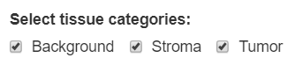
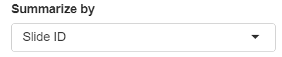

Mean of top 20 / bottom 10 cells report
Kent Johnson
2022-01-03
Source:vignettes/top_20_bottom_10_report.Rmd
top_20_bottom_10_report.RmdIntroduction
The “Mean of Top 20/ bottom 10” analysis is performed on multiplexed fluorescent IHC images. The analysis helps to evaluate whether the staining quality is likely to produce good unmixing of the markers in the image. The analysis computes the mean expression of selected markers in the 20 highest-expressing cells and the 10% lowest-expressing cells. The resulting Excel workbook has tabs showing
- Top 20 data Mean expression of high-expressing cells for each marker.
- Bottom 10%ile data Mean expression of low-expressing cells for each marker, estimating background signal levels.
- Ratio top to bottom Ratio of high-to-low expression for each marker, estimating the signal-to-background ratio.
- Ratio adjacent fluors Ratio of high-to-high expression for adjacent markers, highlighting ratios that exceed a specified range.
Generally, the best unmixing results are obtained when the expression levels of all fluors (excluding DAPI) are within the range of 10-30 normalized counts. Most importantly, the ratio between neighboring fluors should fall between 0.3-3 for multispectral IM3 images or 0.1-10 for MOTiF images. When one fluor is 3x/10x (IM3/MOTiF) brighter than its neighboring fluor, unmixing error and crosstalk are more likely to occur.
The signal-to-background value helps to assess background levels in relation to real, positive signal. When higher background is present, resulting in a lower signal-to-background ratio, cell scoring based on thresholding will be less reliable and will likely result in more false positives. Phenotyping may also be more challenging. The app is will flag signal-to-background values of 30 or less within the Opal 780 channel as this fluor tends to have lower intensities with higher background levels.
Data requirements
The input to this report is a merged cell seg data file from inForm containing data about the samples to measure, and a configuration file naming the markers of interest.
Configuration file
The configuration file is a plain text file (.txt). It contains the names of the columns to measure, one name per line, without the units information. For example, a configuration file might have these contents:
Nucleus DAPI Mean
Membrane CD8 (Opal 480) Mean
Membrane PDL1 (Opal 520) Mean
Nucleus Ki67 (Opal 570) Mean
Cytoplasm CD68 (Opal 620) Mean
Membrane CK (Opal 690) Mean
Membrane PD1 (Opal 780) MeanThe order of entries in the configuration file determines which markers will be compared as adjacent markers in the report.
Detailed steps
Select merge file
Click the “Browse” button in the “Select Merge Data” section of the GUI. Use the file selection dialog to select the file containing your merge data.

Select merge file options
If the merge file contains tissue category data, select the tissue categories to analyze.

You can report by slide or by field. Make the appropriate selection in the “Summarize by” drop-down.

Guidelines
This table gives some general guidelines for interpreting the results.
| Worksheet Tab | Guidelines |
|---|---|
| Top 20 data |
Optimal signal intensity for unmixing is typically between 10-30 for all fluors except Opal 780, which should be at least between 1-10. Reliable data can still be obtained when signals are as low as a few counts or as high as 50 or more counts, but risks are higher for crosstalk issues. |
| Bottom 10%ile data |
Optimal background for unmixing is less than 10. Values greater than 10 are indicative of background staining. Higher DAPI intensities are OK since all cells will be expressing DAPI, meaning this value is a measure of the lowest real signals and not truly background. |
| Ratio top to bottom |
The signal-to-background value helps to assess background levels in relation to real, positive signal. Optimal ratios for top to bottom are values greater than 20. Values much greater than 20 are common. “#NUM” indicates zero background. When higher background is present, resulting in a lower signal-to-background ratio, cell scoring based on thresholding will be less reliable and will likely result in more false positives. For the Opal 780 channel, the report will flag signal-to-background values of 30 or less as this fluor tends to have lower intensities with higher background levels. For DAPI, low numbers can indicate that bottom expressors are high, which is OK as this is not truly a signal-to-background assessment but is a ratio of high to low expressing cells. |
| Ratio adjacent fluors |
Optimal ratios for adjacent fluors are between 0.3-3 or 0.1-10 for IM3 and MOTiF images, respectively. Values below or above these ranges indicate the potential of a fluor bleeding into a neighboring fluor. When one fluor is greater than 3x (IM3) or 10x (MOTiF) brighter than its neighboring fluor, unmixing error and crosstalk are more likely to occur. |